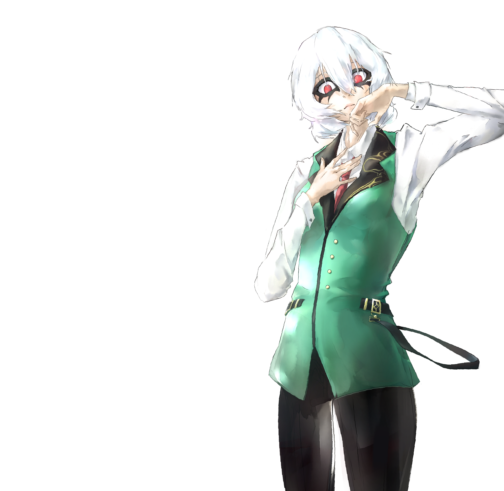
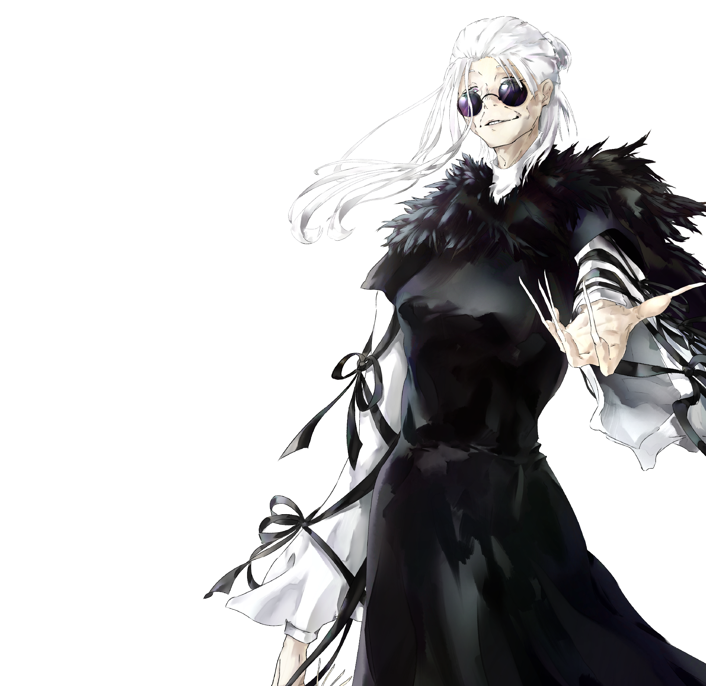
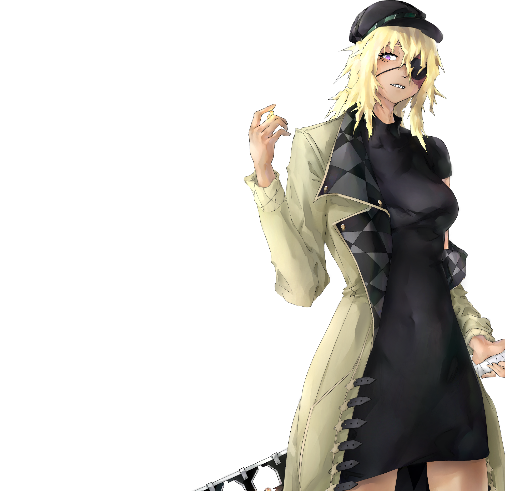
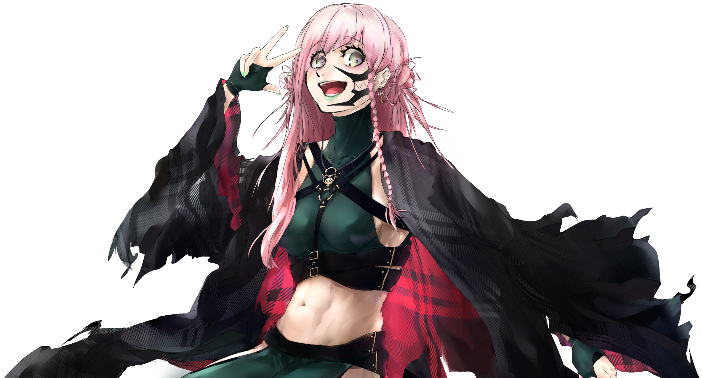

PERSONAJE principal
Si tuviera que describir a Blanca con una palabra, esta sería “mentira”. Blanca es una persona común que trata de aparentar ser más fuerte e importante de lo que realmente es, mostrando una imagen distorsionada de sí misma y de su fuerza tanto psicológica como física.
De esta manera, Blanca enfrenta un conflicto consigo misma, en la que todos le ven como ella se quiere mostrar, aterradora y distante, y esconde las facetas más vulnerables de su personalidad.

PERSONAJE principal
Para Leeliel, mi mayor prioridad fue transmitir el peso de los años. Por ello, decidí usar muchas formas alargadas, que además me ayudarían a crear un diseño imponente.
Tanto el pelo, recogido pero suelto por delante mostrando un largo cabello, como la larga túnica negra, las cintas de los brazos y sus uñas, dan una sensación de extensión, que junto con su expresión apática pero confiada permiten imaginar la personalidad de Leeliel.

PERSONAJE principal
Velónica tiene una personalidad calmada, pero que en algunas situaciones se vuelve explosiva. Para transmitir esto, he tratado de componer su diseño usando triángulos, como se puede ver en el pelo, los dientes o los patrones de la ropa.
Su expresión y pose transmiten sinceridad y calma, mostrándose tal y cómo es, lo que se acentúa con el uso de colores grisáceos en todo el diseño. El pelo es puntiagudo, mostrando su parte explosiva, pero sin dejar de estar caído y descuidado. Este ayuda mucho a hacer reconocible su silueta y de transmitir la indiferencia que la caracteriza.

PERSONAJE principal
La personalidad de Kana es alegre y activa, lo que genera un gran contraste con su fuerza y habilidad para pelear.
Su ropa trata de imitar un traje de combate, con tonos verdosos oscuros y cinturones sencillos. Por encima lleva una capa desgarrada, lo que genera una interesante silueta por sus terminaciones que recuerdan al fuego, demostrando su personalidad “ardiente”. Los colores usados son vibrantes, usando la ropa colores más fuertes y la zona de la cara colores más pastel.

Pulsa para ver el libro de arte oficial